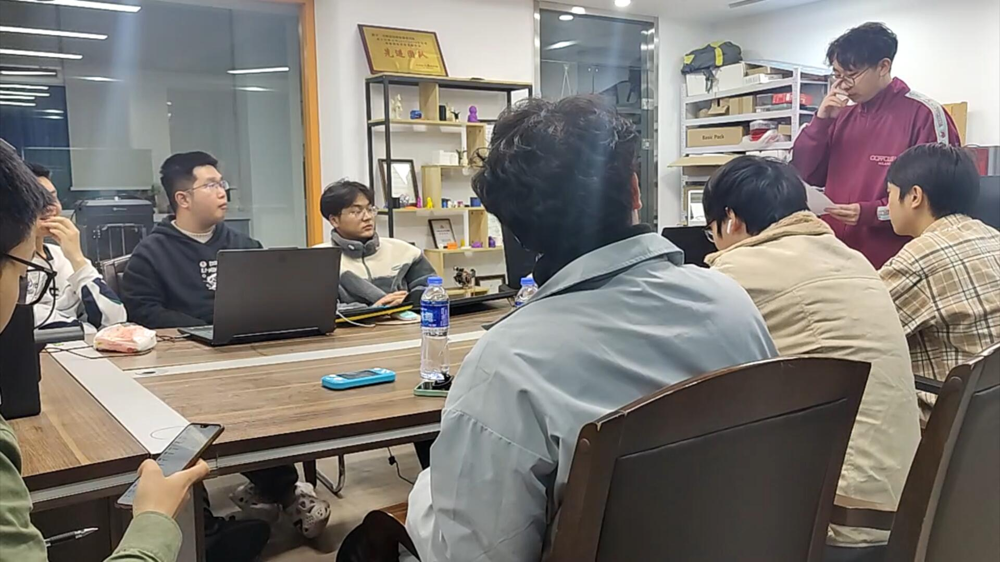
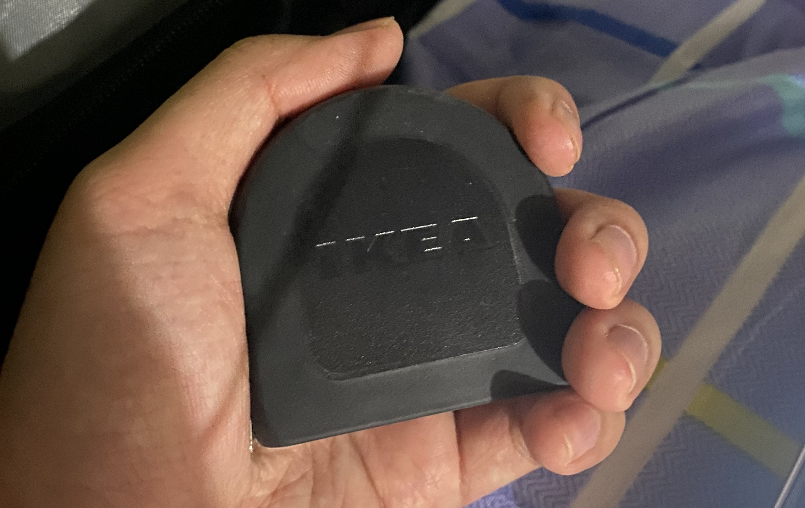

大学四年后，我真的能成为一个好的设计师吗？
最近在找工作，马上大学毕业，在这个时间点回忆一下大学四年我在专业上的学习经历。
大学之前：我想成为工业设计师！
我第一台手机是我姐淘汰下来的中兴ZTE，玩一些游戏时经常闪退，初高中时一直想拥有一台性能强劲的手机，这样我就能玩很多手机上的“大作”了。
没钱买新手机的我，喜欢看B站的手机评测视频，像是在物色我将来的手机。
评分高、使用流畅、打开软件的速度快和高的游戏帧数，还有最重要的高性价比，是我梦中情机的标准。
为了让卡顿的手机变得更流畅一些，还玩过一段时间的刷机，小米的刷机包非常受欢迎，我将我的手机刷成了小米系统，然后我变成为了米粉，小米那时候的slogan还是“为发烧而生”，我觉得小米就是最酷的手机公司。
时间来到高三，高考的压力下，大家或多或少需要点鸡汤来安慰或者激励自己，我的当时的鸡汤就是罗永浩的演讲，因为喜欢看手机相关的视频而了解到他这个人。
他讲发布会搞得跟讲相声似的，除了讲解手机的特点外，还穿插着很多笑话和对人对事的理解，还有工业设计，我第一次听到这个词便是从他的演讲中听到的。
锤子公司非常重视设计，而老罗是个非常固执的人，有自己独特的追求，工匠精神经常挂在嘴边。
看他的演讲我经常是又哭又笑，一个理想主义者在坚持自己，追寻理想的过程使我感动，“永远年轻，永远热泪盈眶”我也是在他嘴里第一次听到。
自然而然地，他成为了我的偶像，我想追随着他的步伐，相信人生来注定要改变世界，成为一个理想主义者。
喜欢研究手机的性能和工业设计的我，我想通过工业设计来改变世界，大学非工业设计不学，立志毕业后进入锤子公司工作，不过高中没毕业锤子公司就倒闭了……
因为还是很喜欢老罗，毕业后敢跟家长要点钱买新手机，买了坚果R2大满足套餐（发布会上他信誓旦旦说这是改变世界的产品）
同学聚会上刚跟同学吹牛没几天，我自己就腻了，这手机+屏幕的产品确实鸡肋，挂咸鱼上买了，换了了台二手的苹果和一台Switch游戏机……
大一：得过且过
高考分数非常平庸的我，来到了北方民族大学。记忆中报志愿的时候我选的是工业设计，但大一的时候机电工程学院的学生都是一个专业——机械类。
我非常不喜欢学习机械类专业的知识和常规理工科的课程，什么工程制图、高数和C语言等，和很多同学一样，大一的时候得过且过，但也没挂科，很多门课都是被老师捞到60分过的。
不过工业设计的老师还开了有关工业设计的选修课，为准备选工业设计的学生准备，我自然是选了。
首先是工业设计概论，几个工业设计的老师各自负责书里的部分章节，现在也记不太清内容了，大致讲了工业设计的概念，我只记得最后一个作业是用实际案例解释书里的一些概念，并制作PPT进行汇报。
我在汇报上分享了我有的一些产品（我的笔电和switch游戏机），分析他们在设计上有哪些地方吸引了我，我得到了一些老师积极的评价，给了我很好的正反馈。
我记得我那时候非常紧张，在手机上写了演讲的文字稿，并带到讲台上边播PPT边念我的稿子，对于我这种人，稿子还是很重要。
不知为何，后面在各种课程或者项目汇报中，我再也没有提前准备稿子，表现得也不如人意。
另一个课程就是设计速写（说是速写，更像是传统的素描），对于我们这种不是学美术出身的学生来说，这种课程是很必要的。
不过，作为选修课，一周只有两次课，当时的老师是在设艺学院请过来的，对教学也不是很上心，上课画个苹果画个立方体就可以交差了，直到现在美术还是我的一块硬伤。
之后学院开了一次会，关于选专业的事情。那我肯定要选工业设计咯，但听说选的专业不一定能进，加上我成绩不是很好，心里一直有一种恐慌。最后学院非常良心，所有同学都选上了自己的第一志愿，我也正式开始学习工业设计了。
大二：小有成就
进入到大二，尽管锤子公司已经倒闭，老罗正在抖音上上演着“真还传”（直播带货，快速赚钱，把两亿的债务还上）我对工业设计依旧非常喜欢，仍有着用设计改变世界的理想。
这时候的课程更多的是技能课，PS、犀牛、设计表现……
在上犀牛建模课之前的暑假，我提前在网上自学建模，上课做随堂作业的时候，我总能提前交作业，那些到下课时间还没做完的同学，老师会单独指导。
老师看我做得快，便叫我帮他指导其他同学，不知道是老师开玩笑先叫的还是同学先叫的，我有了一个“尊称”，叫覃老师，每当同学想请教我专业课程上的问题时，他们都叫我一声覃老师，有点开玩笑的性质。
一开始还会沾沾自喜，这是他们对我专业能力上的认可，但后面被叫多了会让我有点反感，我不希望平时有人也这么叫我，显得太客气了，太有距离感了。
在学习渲染的时候，除了正常跟着老师学的知识外，我也自行在网上学了更多的渲染知识，渲染出来的效果比同学要好一些，老师便让我做分享。
这是我第一次跟同学分享学习经验，我打了个比方，说渲染就像摄影一样，产品就是你的模特，给产品上材质就相当与化妆，灯光和构图和摄影里的概念也如出一辙，还分享了我学到这些知识的博主，就是不知道他们有没有听，后面有没有看。
关于犀牛，我到现在还在怀疑，我平时用的那些建模工具和方法所建出的模型真的能投入实际生产吗。
而在PS技能课上，我获得了人生中的第一个奖，赚了500块的零花钱，让我觉得，拿奖怎么这么简单？我是不是有设计的天赋？
老师的教学理念是“以赛助学”，结课作业一般都会参加一个设计比赛，当时参加的是宁夏本地关于节约粮食的海报征集活动。
我的海报理念是农业生产节气的海报，灵感来源是金山农民画，我的水平只能画点简笔画，画出了对应节气人们农忙活动的样子，配上了对应的节气的颜色和诗句。
不过主办方后面要求我把诗句给去掉了，我觉得节约粮食的标语也有点土，在作品集中把它也去掉了。
设计表现也就是对应工业设计的设计速写，由于是专业课，强度也变得高了，不过我还是没什么天赋，在课程快要结束的时候才画出点像样的手绘。
而课程结束之后，除了课程设计需要，便很少再学习手绘了，我知道手绘一直是我的弱势，但每当我想要系统性地重新学习画画的时候，都会有繁杂的作业把我的时间和热情顶掉。
当然，除了技能课，顺着设计流程学了市场调研和产品调研的方法以及产品模型制作等的课程。
在市场调研的课程上，由于自己喜欢打游戏，喜欢游戏掌机，我顺着自己的性子，和另一个宿舍的同样喜欢游戏的同学组了一个队，给队名取了一个有点中二的名字，第九艺术组，像是要给电子游戏正名，产品调研的对象就是游戏掌机。
这次，我当上了组长，像模像样地组织了一次访谈，把手头的游戏机全部带出来，让学校里面其他同学体验，并根据我们之前做的一些调研，问他们一些问题，录音录像，回来写成文字稿，分析他们的痛点和需求。
根据收集的数据和访谈结果，列出至少10项当前产品未能满足的需求或存在的技术限制。当时我觉得我们分析地头头是道，一定能设计出很好的游戏掌机。正当我摩拳擦掌，要开始设计属于我自己的掌机时，课程结束了，课程并没有设计的部分，只有调研的部分。
之后组里的一个同学还买了一台Steam Deck。
在产品模型制作课上，最有趣的是动手的部分，让我知道了尺寸的重要性。
我们跟着上课的节奏，分别做了纸质模型、泡沫模型、石膏模型、塑料模型和3D打印的模型。
做这些模型都有基本的流程——找一些现有的产品（本来应该是自己设计的，不过时间不允许），用犀牛逆向重新把模型建出来，导出图纸，打印就可以开始做了。
首先是纸质模型，我当时选的是一台黑胶唱片机，老师说要一比一地导出图纸，我听成了一比一地建模，我参考了真是黑胶的尺寸，把模型一比一地建了出来，然后导出三视图，打印图纸带到课上
我的图纸明显要比其他同学大得多，图纸数量也比其他同学多一些，一开始我还不觉得奇怪，但越做越觉得其他同学的模型怎么这么小。
说实话，我当时有点糗。
但老师走过来也没说什么不对，只是再跟我解释了一遍这个“一比一”的意思，下课之后，其他人捧着自己的小模型出教室，而我是抱着的。
最容易扣分的部分是尺寸上，建出来的模型尺寸，图纸打印出来的尺寸，以及最后模型做出来的尺寸都要是一一对应的。
自己在犀牛软件上精心设置好的尺寸，被打印店老板一个默认打印的设置（有四周有较多的出血，比例有压缩）而失瞬间效，每次都要费很大得劲很老板说比例按一比一。
而在制作模型的时候，由于很多材料的特点就是操作不可逆，一旦把某些地方除去太多，尺寸就会变小了，补也补不回来
比如石膏，石膏成型变成固态需要时间，石膏刮掉就是刮掉了，不可能把刮掉的石膏再粘回去
所以要留有一定的余量，越靠近自己的尺寸，处理操作越要小心。
说到尺寸，去年暑假研学的时候，老师让我们组队在规定的时间内去逛宜家的同时购买一件便宜实用的产品，回来后评比，看谁买的好。
由于宜家非常大，没逛完就到回去的时间了，但因为同队的同学晚上去玩不打算一同回去，有了更多的时间逛宜家。
最他后买了一个非常有质感的喷壶（塑料做得跟金属一样），我们赢得了比赛。
老师送给我们每个人一个卷尺奖励，再次强调尺寸的重要性，鼓励我们在工业设计上做出成就。后面因为一些事情，我跟他说将来不做工业设计了，但不知为何，现在一直还随身携带（一直放在背包里）。
让我感兴趣的还有一门课，叫互联网产品设计，通俗的讲就是设计我们平常用的手机APP和网页。
老师让我们自己想点子，寻找需求，设计出一款APP来满足这个需求。当时大家做什么都有，做校园跑腿APP、读书APP、寻医问诊APP、旅游APP……
我一直都很喜欢掏二手货，自己身边稍微贵点的东西恨不得都是二手的，手机、电脑、耳机、手表、衣服。没事喜欢逛咸鱼和多抓鱼，于是我就想做一款针对校园买卖旧货的APP。
课上理论讲了很多，怎么写需求文档、怎么用产品经理的思维去思考问题，这些知识我只能说是了解，我对APP界面设计更感兴趣一些。
当时老师教我们使用的是Axture，现在看来似乎有点过时了，因为在真正的互联网那个公司里，大家用得更多的是Figma。
我的APP叫余塘，像是闲鱼和多抓鱼杂交出来的产物，首页是和闲鱼一样热闹的感觉，而商店页搞得跟多抓鱼一样干净。
同学除了可以自行在余塘里买卖旧物之外，我设想了一种商业模式，就是开在校园里的线下商店，里面为同学提供回收服务，对回收回来的旧物重新贩卖，
我几乎做了能想到的全部页面，尽可能真实地还原出一个正常APP该有的样子，包括界面和交互，这里有个名词叫高保真原型，还学了点UI相关的知识。
本质上还是做产品模型，但逼真的效果是传统产品模型不能比拟的。好像从这时候开始，心里有了开发一款产品的念头。
大三：组长。
大三的时候，工业设计的基础已经学得七七八八了，小组作业明显增多，因为课程设计，有更多动手实践的机会。
这时候有一门课叫设计管理，在某次上课的时候，老师通过一次统计，让我们选出几个认为有能力有负责心的同学作为后面小组作业的组长。
而这几个人中，有我。高兴是高兴，但不善言辞的我，让我作为组长，压力属实比较大。此后，很多小组作业中，我便默认是组长。
在油泥模型制作的课程设计上，我是组长，用油泥做了一辆火星概念车。
在设计管理的小组作业——品牌设计中，我是组长（老板），主导了设计了一个叫地球行者的户外品牌。
在产品结构设计的课程设计中，我是组长，根据戴森的一款吸尘器，模仿着做了模块化设计，引入了变换重心的概念进行重新设计。

在系统上设计的课程设计中，由于组长的头衔给我的压力太大了，跟老师提出我不做组长了，但老师觉得组内没有更适合的人了，跟我说“你可以不做组长，但课程设计的质量你得要把控”
其实本质上还是组长，讨论和进度还是我主导和控制的，但没有繁琐的文件整理和组长这个头衔，我心里舒服多了。
在这个课程设计中，我们根据可持续设计的题目，设计了一个社区堆肥与绿化循环的系统。
去年暑期研学，最后一周在设计公司里，虽然很不情愿，我还是组长，做了一个爆米花机的外观设计。天气炎热，知道无论设计成什么样都会过，以及公司撒手不管的态度，我们选择了集体摆烂。
怎么说呢，大学里面的小组作业或者课程设计真的好像过家家，项目几乎没有实际的意义，大家各司其职，假模假样的工作和汇报。
我往往承担最费时费力的建模和渲染，对于这方面似乎有一种完美主义在我心里（仅仅只是我水平有限的标准），不愿意把这份工作让出。
做了这么多的组长，我还是认为沟通交流是我的一大障碍，若在氛围舒服的环境里还好，当我和组里的某个人气场不对付的时候，我的表达往往会出现问题，在陌生的环境里表达能力也会骤降，还是得练。
当然，沟通交流不限于口头上的，在组织开会交流前，我尽可能的把所有想要说的话，想要布置的任务在电脑里写清楚，在交流的时候心里会更有数一些，交流之后会把文字稿发送给他们，在进行头脑风暴的时候，我更多的是引导和记录。
我个人也不是特喜欢开会，有事随时讲出来就行，不需要在特定时间，大家聚在一起才能讲。